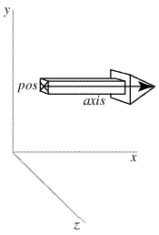

|
If you're new to Python A VPython tutorial
What's new in Visual 5 VPython web site |
The arrow Object The arrow object has a straight box-shaped shaft with an arrowhead at one end. The following statement will display an arrow pointing parallel to the x axis: pointer = arrow(pos=(0,2,1), axis=(5,0,0), shaftwidth=1) The arrow object has the following attributes and default values, like those for cylinders: pos (0,0,0), x (0), y(0), z(0), axis (1,0,0), length (1), color (1,1,1) which is color.white, red (1), green (1), blue (1), opacity (1), material, and up (0,1,0). As with box, the up attribute is significant for arrow because the shaft and head have square cross sections, and setting the up attribute rotates the arrow about its axis. Additional arrow attributes: shaftwidth By default, shaftwidth = 0.1*(length of arrow) headwidth By default, headwidth = 2*shaftwidth headlength By default, headlength = 3*shaftwidth Assigning any of these attributes to 0 makes it use defaults based on the size of the arrow. If headlength becomes larger than half the length of the arrow, or the shaft becomes thinner than 1/50 the length, the entire arrow is scaled accordingly. This default behavior makes the widths of very short arrows shrink, and the widths of very long arrows grow (while displaying the correct total length). If you prefer that shaftwidth and headwidth not change as the arrow gets very short or very long, set fixedwidth = 1. In this case the only adjustment that is made is that headlength is adjusted so that it never gets longer than half the total length, so that the total length of the arrow is correct. This means that very short, thick arrows look similar to a thumbtack, with a nearly flat head. Note that the pos attribute for cylinder, arrow, cone, and pyramid corresponds to one end of the object, whereas for a box, sphere, or ring it corresponds to the center of the object. See description of Additional Attributes available for all 3D display objects.
|
||